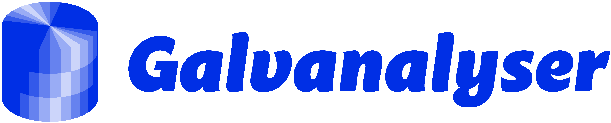

Welcome to Galv’s documentation!
¶
Contents:
First Time Quick Setup
Installing required tools
Running Galv
Setting up a Harvester
Maintenance
Galvalanyser User Guide
Galv server
Web frontend
Harvesters
Monitored paths
Datasets
Gavanalyser Development Guide
Project Folder Structure
Running
Testing
Components and Technology
Contributor guide
Indices and tables
¶
Index
Module Index
Search Page
Galv
Navigation
Contents:
First Time Quick Setup
Galvalanyser User Guide
Gavanalyser Development Guide
Related Topics
Documentation overview
Next:
First Time Quick Setup
Quick search